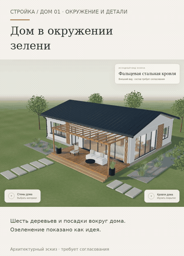

Дом и вид из его окон.
Предлагаемое озеленение вокруг того же дома, форма и ткань двух подушек дивана, более открытый интерьерный ракурс. Повороты в прогулке сглаживаются; уменьшение движения отключает сглаживание.
Открыть GIF · Дом крупно · Гостиная · На телефоне
Если видео не открывается — показать GIF

Окно раньше · То же окно теперь
Интерактивный прототип →
Предыдущий этап: планировка семьи →
Монтаж настоящих кадров Chromium версий 25 и 26, не непрерывная запись и не FPS. Сравнение окна использует реальную предыдущую сцену. Участок и озеленение не согласованы, физический iPhone/Safari не проверен. Публичный интерактивный адрес пока не подключён; raw HTML не является размещённым сайтом. Рабочий сайт и сервер не менялись.